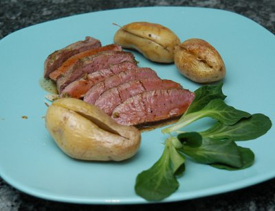

| Zutaten für 4 Personen: | |
| 1 | Zitrone |
| 4 | Knoblauchzehen |
| 1 El | Koriandersamen |
| 1 Tl | Kreuzkümmel |
| 1 Bund | Petersilie |
| 3-4 | Lammrückenfilet, je nach Grösse, insgesamt 500 g |
| Salz, schwarzer Pfeffer | |
| 2-3 El | Olivenöl |
| 1 dl | weisser Portwein |
| 2 dl | Kalbsfond oder Fleischbouillon |
| Lorbeerkartoffeln: | |
| 600 g | mittlere Kartoffeln |
| 1 Zweig | frische Lorbeerblätter |
| Salz, schwarzer Pfeffer aus der Mühle | |
| 2 El | Olivenöl |
Den Backofen auf 80°C vorheizen. Eine Platte mitwärmen.
Die Kartoffeln waschen, waagrecht zu zwei Dritteln einschneiden und je 1 Lorbeerblatt in die Einschnitte stecken.
In einer Bratpfanne die Kartoffeln im heissen Olivenöl zuerst auf mittlerem Feuer zugedeckt 20 Minuten, dann bei kleiner Hitze ungedeckt in 20-25 Minuten fertig braten. Etwas salzen.
Während die Kartoffeln garen, die Schale der Zitrone fein abreiben und den Saft auspressen. Den Knoblauch schälen und in feine Scheiben schneiden. Den Koriander und den Kreuzkümmel grob zerstossen. Die Petersilie fein hacken. Alle diese Zutaten in eine Schüssel geben und verrühren.
Die Lammrückenfilets mit Salz und Pfeffer würzen.
In einer Bratpfanne das Öl erhitzen. Die Lammrückenfilets darin rundum während 3 Minuten scharf anbraten.
Dann die Hitze reduzieren, die Zitronenmarinade über die Lammfilets verteilen und alles sofort auf die vorgewärmte Platte geben. Im 80°C heissen Ofen etwa 30 Minuten nachgaren lassen.
Fond oder Bouillon vorbereiten
Den Bratensatz mit dem Portwein auflösen. Fond oder Bouillon dazugiessen und alles auf grossem Feuer gut zur Hälfte einkochen lassen. Beiseite stellen.
Die Marinade von den Lammrückenfilets zur Saucenreduktion geben, diese aufkochen und wenn nötig mit Salz sowie Pfeffer abschmecken.
Zum Servieren die Lammückenfilets schräg in Stücke schneiden, auf vorgewärmten Tellern anrichten, mit Sauce beträufeln und die Kartoffeln rundum verteilen.
2 Personen: Zutaten halbieren.
1 Person: Zutaten vierteln, jedoch für die Sauce 1/2 dl Portwein und 1 dl Fond kräftig reduzieren.
Pro Portion 29 g Eiweiss, 14 g Fett, 29 g Kohlenhydrate; 388 kCal oder 1625 kJoule.
Kochen Jan 2005, Seite 52
Gelang am 15.2.2006 hervorragend. Das Fleisch war super zart. Reini fand den Zitronensaft von der Marinade zu aufdringlich.
Schmeckte am 18 Nov 2010 ebenfalls sehr fein auch wenn das Filet für Sandra absolut inakzeptabel zäh war. Sie meint so ein Fleisch hätte der Metzger vom Migros nicht verkaufen dürfen. Sandra meinte es hatte zu viel Zitronengeschmack in der Sauce. RE
@LINKBACK_TAG@ @WAKELOCK@